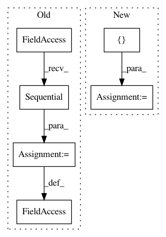

004b323e6fc19ba4ff96bcd48d8518d35a7c5e8c,test/conversion/test_load_batchnorm.py,TestBatchNorm,setUp,#TestBatchNorm#,18
Before Change
def setUp(self):
self.model = keras.models.Sequential()
self.model = keras.models.Sequential()
self.epsilon = 10**(-6)
self.gamma = np.array([2.0, 3.0])
self.beta = np.array([4.0, 5.0])
After Change
[self.keras_model.layers[0].input],
self.keras_model.layers[0].get_output(train=False),
allow_input_downcast=True)
self.keras_output_fprop_func = theano.function(
[self.keras_model.layers[0].input],
self.keras_model.layers[-1].get_output(train=False),
allow_input_downcast=True)
grad = theano.grad(theano.tensor.sum(
self.keras_model.layers[-1].get_output(train=False)[:,0]),
self.keras_model.layers[0].input)
In pattern: SUPERPATTERN
Frequency: 3
Non-data size: 6
Instances
Project Name: kundajelab/deeplift
Commit Name: 004b323e6fc19ba4ff96bcd48d8518d35a7c5e8c
Time: 2016-08-16
Author: avanti.shrikumar@gmail.com
File Name: test/conversion/test_load_batchnorm.py
Class Name: TestBatchNorm
Method Name: setUp
Project Name: dpressel/mead-baseline
Commit Name: 3bc0a1906529329f57c749f6a175eca4b7907a96
Time: 2018-05-30
Author: dpressel@gmail.com
File Name: python/baseline/pytorch/classify/model.py
Class Name: NBowBase
Method Name: _init_stacked
Project Name: mariogeiger/se3cnn
Commit Name: 5f3cddb62a332dc7d98dfacebf94d10bf7874600
Time: 2018-01-17
Author: geiger.mario@gmail.com
File Name: arch/example.py
Class Name: CNN
Method Name: __init__